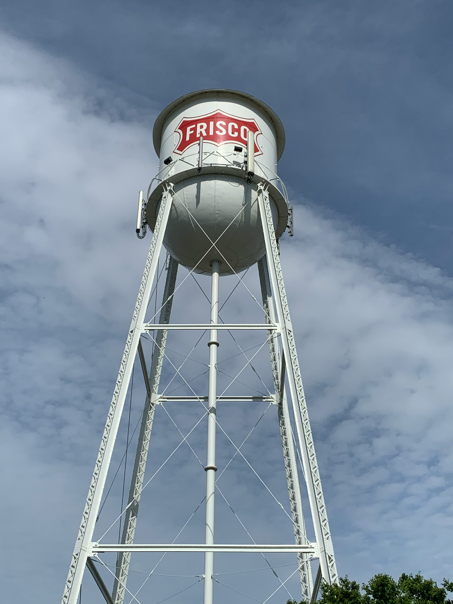

City Overview

Frisco is one of the fastest-growing cities in the U.S., located in the Dallas–Fort Worth metroplex.
City Details
- Population: ~225,000
- Year Incorporated: 1908
- Region: North Texas
- Classification: Suburban
- Average Income Level: $146,158. Higher than state average